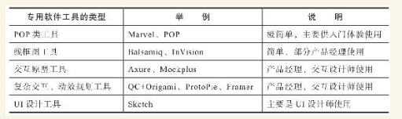

1. 第1节 认识工具特征，在工作环节合理使用
车马的工具观：
（1）根据需要选用趁手的工具，而不是成为工具的奴隶
（2）先用会用的、简单的、通用的工具，随着水平提高，当现有的工具满足不了自身需要的时候，再换更专业、更强大的工具。
1.1. 工具分类
1.1.1. 原始工具——笔、纸、贴、板
- 贴是报事贴，板是白板或黑板
1.1.2. 通用的软件工具
- 通用软件工具指那些不是专门为产品工作规划、开发的软件，但产品经理可以将它们用于产品工作
- 流程图工具、文档工具、项目管理工具、数据分析工具
- 我在慧聪的时候，产品规划中只用纸笔，自称“A4产品经理”；在3721，就开始用Office这个通用软件做产品规划了。
1.1.3. 专门的软件工具

（1）POP就是Prototyping on Paper（在纸上构建原型）的意思。
（2）线框图是起步阶段的产品规划图。
（3）现在的交互原型工具普遍都能实现精细的原型规划、较复杂的交互效果、真机预览。
（4）复杂交互、动效工具，顾名思义可以做出复杂的交互、动效规划，都支持真机演示，可以向产品实现团队精确表达产品意图。
（5）UI设计工具主要是设计师用的，也有一些产品经理将这类工具用于产品规划。
1.2. 产品工作不同阶段的工具推荐
1.2.1. 初步思考阶段，推荐用纸、笔、贴、板
POST-IT报事贴（这是一个简单而伟大的产品）在办公室的普及程度仅次于A4打印纸，很多产品团队喜欢用报事贴，尤其在需求管理和产品规划初期。
1.2.2. 信息、思维整理阶段，推荐用ProcessOn、Xmind
需要和他人交流，一张清晰的思维导图显然是个很好的交流工具。
1.2.3. 画功能流程图、界面流程图阶段，推荐用ProcessOn、Visio
- 如果交互原型用的是Axure RP，同时用它画流程图，避免了多个软件之间的切换。
1.2.4. 交互原型规划阶段，推荐用Axure RP、Mockplus
- Axure RP，无疑是互联网产品人使用率最高的专业原型工具，而且其拥有大量的元件库、分享的原型等配套资源。
- 该产品从2003年1月对外发布，开创了专业交互原型工具的品类，是历史最悠久的原型工具。
- 如果上手这两个工具比较困难，可以先用POP、线框图工具快速上手。这类工具我推荐Marvel App
1.2.5. 数据分析阶段，推荐先用好Excel
- 如果所在的产品团队使用某种数据分析SaaS，例如Google Anylitics，那么产品新人也一定要学会并且用好